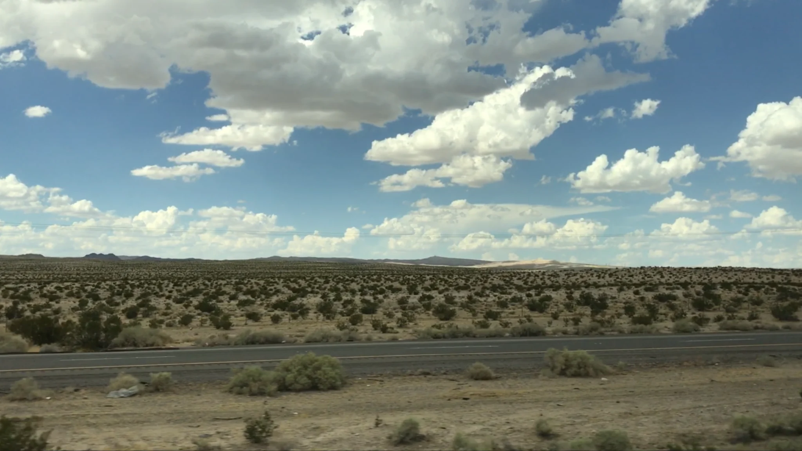
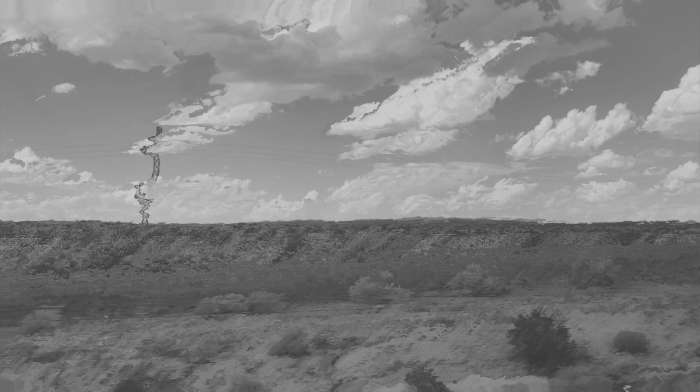
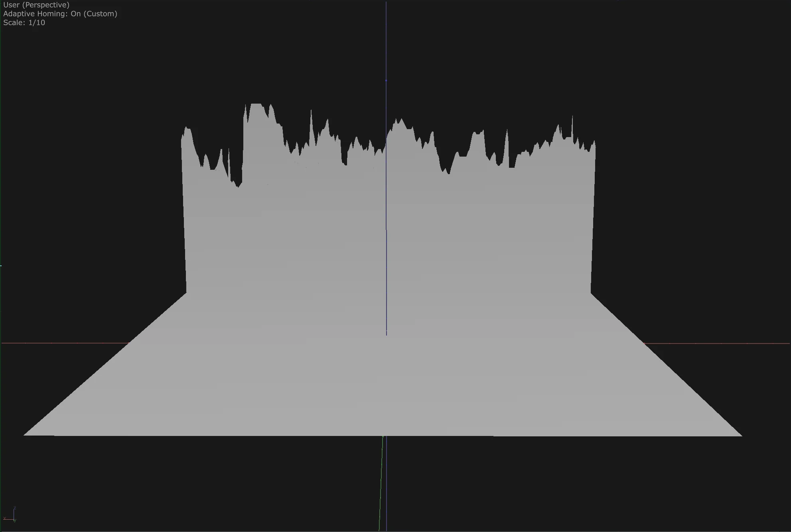

Approximate
Horizon

The system does not see the landscape. It reconstructs one from what it can measure.
Approximate Horizon explores how a system reconstructs a landscape through measurement rather than perception.
The work begins with a recorded landscape. By removing colour, the image is reduced to variations of light and darkness. What appears to the eye as sky, ground and distance becomes, for the system, a field of measurable brightness.
The system does not recognise objects, depth or a horizon. It processes the landscape through numerical values and rebuilds it according to what can be extracted from the image.
The result is not a representation of the original landscape, but an approximation produced through computational logic.

Luminance values are translated into spatial variation, turning brightness into a reconstructed surface.

TouchDesigner · filming · luminance analysis · geometry reconstruction